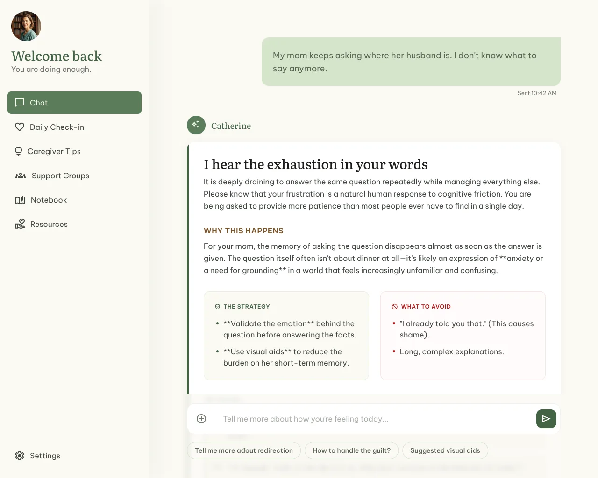
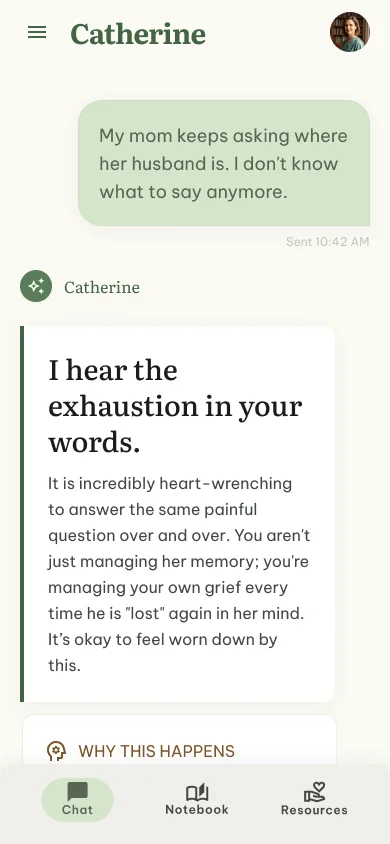
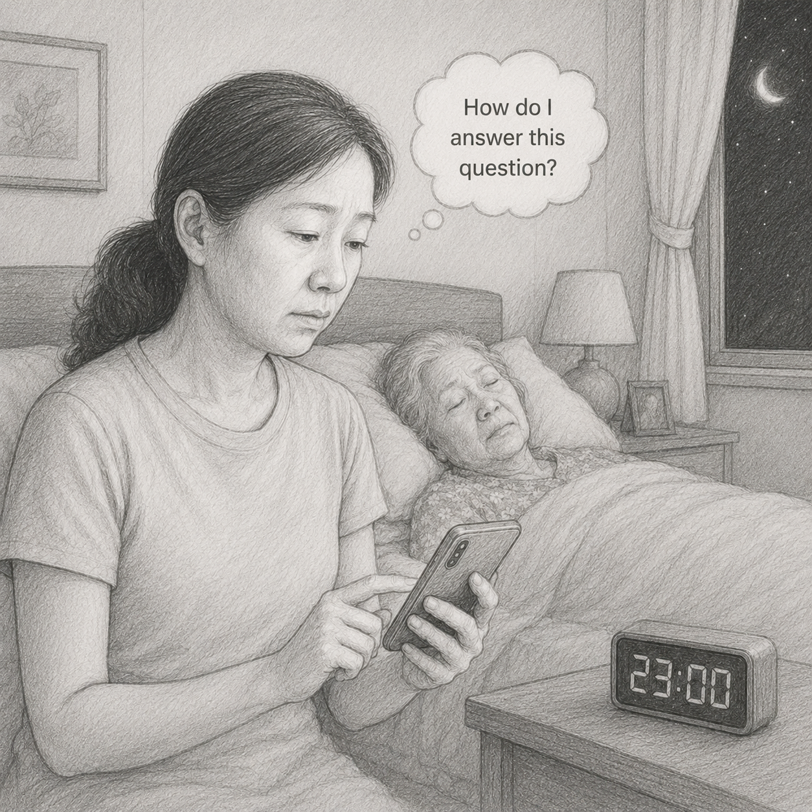
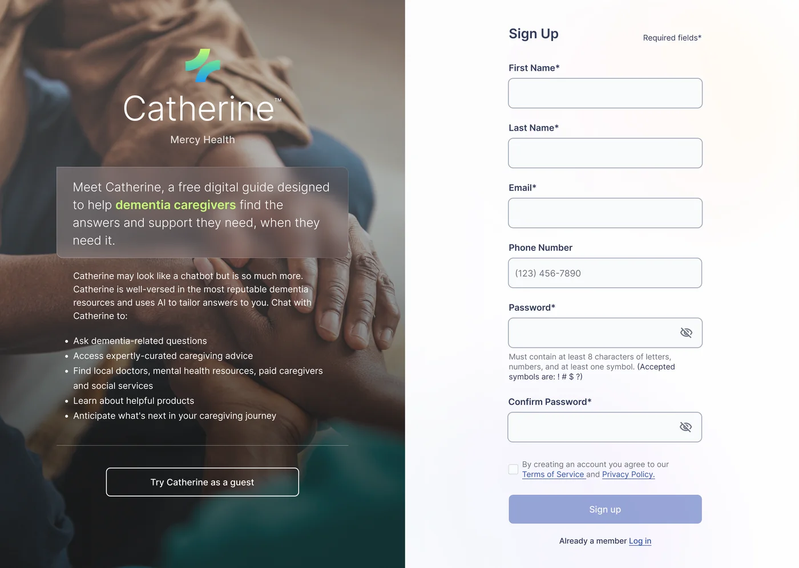
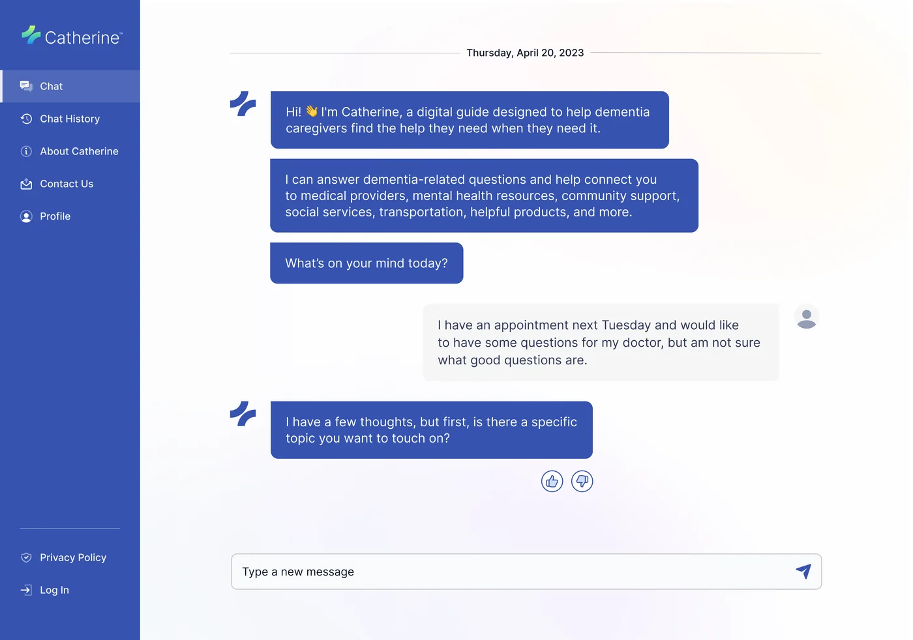
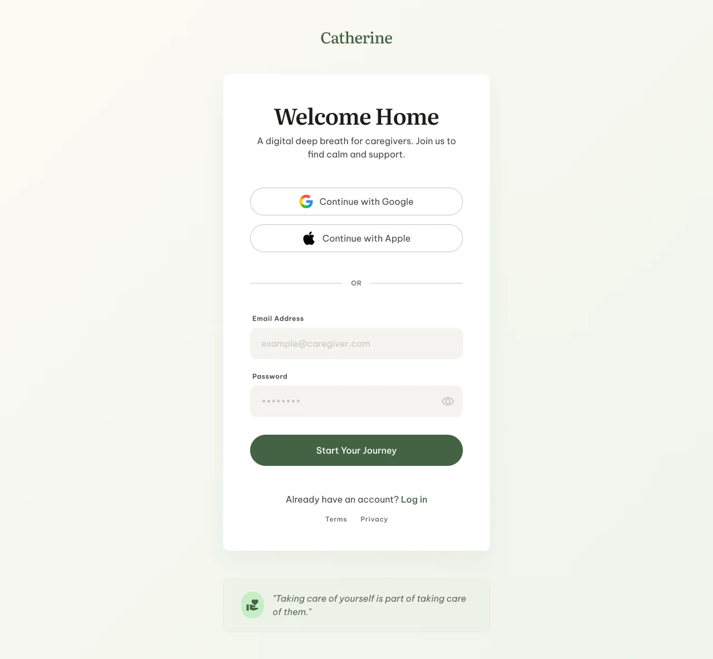
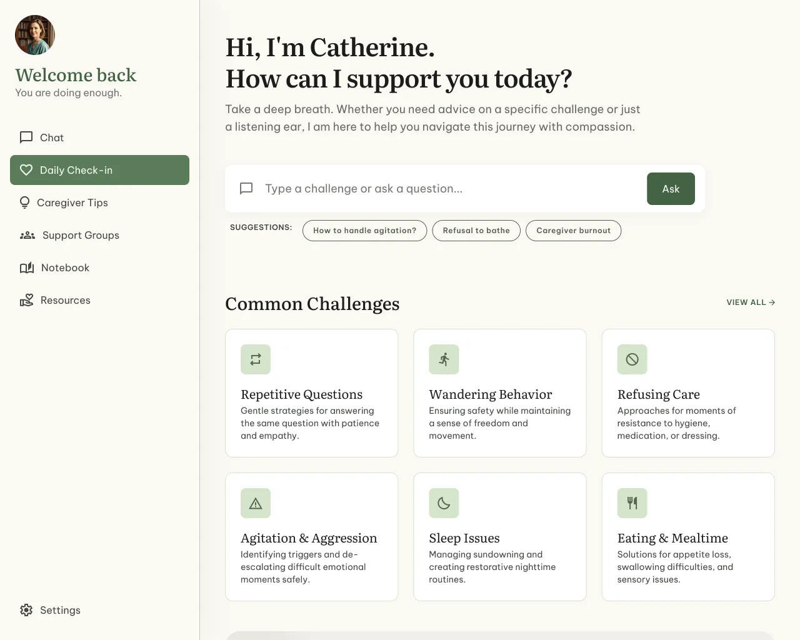
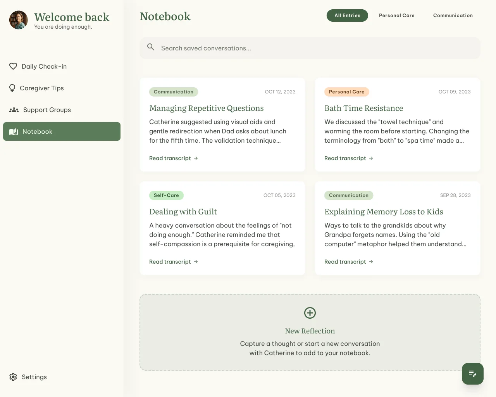

An AI companion for dementia family caregivers, built for the moments they face alone.



Linda has just gotten her mother to sleep. For the fifth time today, Mom asked, "Where is my husband?" Each time, Linda didn't know how to answer — the truth would devastate her mother, a lie would devastate Linda. She picks up her phone, not wanting to bother anyone, looking for one thing: how do I answer this question?
Dementia caregivers don't only face care tasks. They face constant emotional pressure and an information vacuum. In the critical moments — when a mother asks repeatedly about someone who passed, when a father refuses to eat, when wandering happens — they need immediate, trustworthy answers, not a list of forty Google results to triage.
Existing resources are either too scattered or too gatekept. In the moments help is needed most, the caregiver is often alone.
Spouses and adult children. Aged 45–75. Moderate-to-low digital comfort. Living under sustained stress. Almost always unprepared for the sudden behavioral incidents dementia brings.
Daughter and primary caregiver
Catherine was built by a fully remote, early-stage team. As the only designer, I worked outside the rooms where most decisions formed.
I owned the sign-up/login flow and the chat interface wireframes. AI behavior, tone, and product strategy sat outside my scope.


Feedback was sparse. Decisions arrived as instructions, not conversations, and I delivered without asking what they were for.
What I'd build if I came back to this problem today — not as a chatbot, but as a companion that remembers, behaves with care, and earns its place in a caregiver's hardest hours.

Shrink the form. Only ask for what is necessary — phone numbers, complex passwords, and marketing checkboxes are removed.

A low-pressure start: immediate access with a warm welcome and quick-topic cards for common challenges like repetitive questions and sleep issues.
A structured, easy-to-read chat experience that prioritizes emotional validation and practical guidance over generic bot interactions.

A saved-conversations list styled as a personal journal, making it easy for caregivers to revisit trusted advice during difficult moments.
Back then, design decisions arrived without rationale, and I executed without questioning what I might have asked. I didn't realize that pushing for the "why" — even in writing, even unanswered — was part of my job, not a luxury reserved for senior designers.
In some sense, this case study is those questions, asked years late.
In high-stakes contexts, retention and DAU will mislead you. Solve "do users dare to trust this?" before "how often do users come back?" Engagement metrics are downstream of trust — never the other way around.
Always begin from a specific user moment — with time, place, and emotional context — not an abstract feature description like "an AI assistant for X." If you can't picture the moment, you can't design for it.